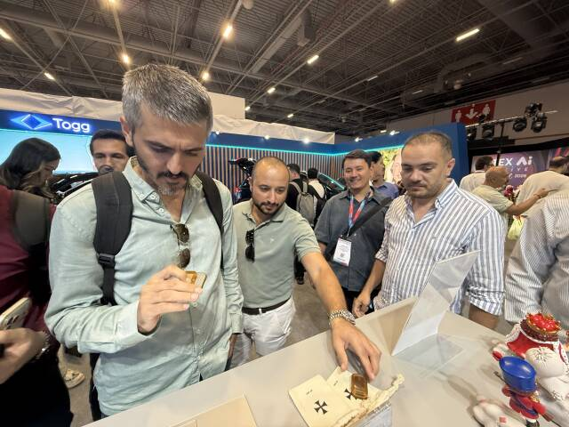
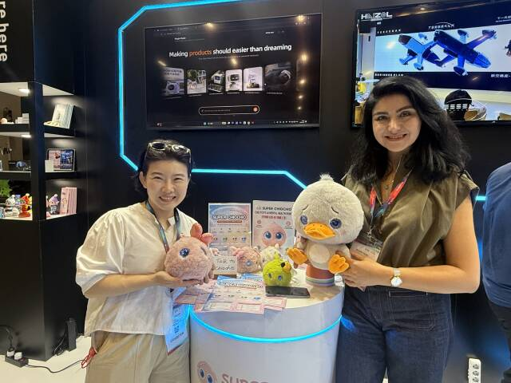
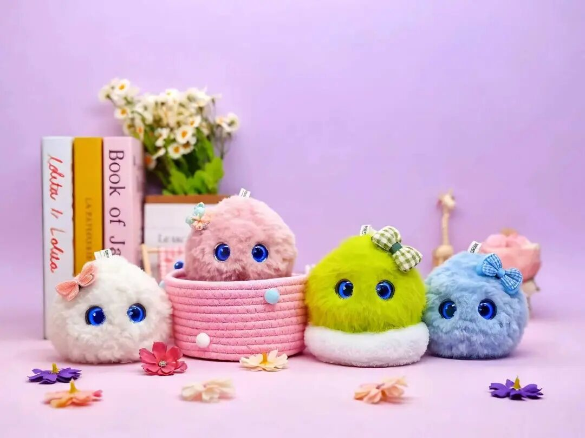

9月19日，文汇报·上观新闻刊发了一篇重磅报道——《海智智造带4位创客勇闯土耳其，发现一个被低估的真相：造物能力很稀缺》。这篇聚焦中国制造出海新逻辑的报道里，超级球球作为随队出海的创新产品，被特别“点名”了。
“还有一个由5位清华博士组成的团队，把人工智能、儿童心理和成长科学，塞进一只叫‘超级球球’的机器人。”
—— 文汇报·上观新闻，2026年9月19日
对于一只再次出海、站上国际展台的AI陪伴机器人来说，能得到省级媒体的着墨描写，是一份意外的鼓励。而在这句话背后，是一段值得从头讲起的故事——超级球球的这次土耳其之行，为何格外热闹？
01 又一次出发，跟着“造物”去土耳其
不久前，海智智造带着4位创客和一批中国创新产品从上海出发，飞行十几个小时，抵达土耳其伊斯坦布尔，参加GITEX首次落地土耳其的科技展会。这不是超级球球第一次走出国门，但依然是它海外旅程中重要的一站——它再次随行出海，出现在了伊斯坦布尔的展台上。
这次展会有些特别。据领队、海智智造旗下魔砺工场总经理段丹彤逛完全场后的直观感受：现场八成以上参展团队都在做软件类项目。在满是软件摊位的展会里，主打实体产品的超级球球，反而显得格外醒目。

这恰好呼应了上观新闻的核心判断：AI时代，大模型大幅缩短了从想法到图纸的距离，但“实物产品涉及材质选型、结构调校、工艺适配、稳定性测试，这些能力AI替代不了”。当AI越普及，“造物”就越稀缺——而超级球球，正是一件被认真“造”出来的实物。
02 展会现场：想买回家的人，和想做定制的人
超级球球在伊斯坦布尔的人气，超出了团队的预期。上观新闻记录下了现场的热度：
“ ‘超级球球’ 在土耳其展上大受欢迎，有人当场希望付费买回家，有渠道商希望做本地化定制，开发专属版本适配本地市场。”
—— 文汇报·上观新闻，2026年9月19日
普通观众想把它带回家，渠道商则看到了更深的生意：把它变成“本地的产品”。这两种热情叠加在一起，指向同一个信号——AI陪伴机器人不是只有单一市场的故事，而是一个可以本地化、可以长出专属版本的品类。
03 一只球背后的“验证经济”
上观新闻把这次展会概括为中国制造出海的一个新注脚：过去“中国制造”出海的标签是大批量、标准化、物美价廉；而这次展会释放出的新信号是——输出定制能力，正在成为新的增长点。越瞄准细分人群的定制产品，客群对手感、材料、细节和工艺越挑剔，也越愿意支付溢价。
超级球球的诞生路径，正是这条逻辑的实践样本。这个由5位博士组成的团队，把人工智能、儿童心理学和成长科学揉进同一只机器人里；再凭借自研工程化能力与供应链协同体系，走通了 “小批量市场验证 — 拿到真实反馈迭代 — 确认需求再扩产” 的完整链路。报道把这种新模式称为“验证经济”：不再追求一上来就大规模量产，而是先让真实市场说话。

对硬件创业来说，这意味着曾经“拿图纸找工厂、动辄上千台起订量”的高门槛游戏，正在被改写。超级球球能出现在伊斯坦布尔的展台上，本身就是这套新规则跑通的证明。
04 下一步：把土耳其的回响，带向更远的世界
从被上观新闻报道，到伊斯坦布尔展台前的围观与付费意向，超级球球的这次土耳其之行收获颇丰。接下来，团队将基于展会中收集到的渠道商反馈，推进本地化定制——从语言、内容到交互习惯，开发适配不同市场的专属版本。
中国制造的出海逻辑，正在从输出产品，走向输出“造物能力”。而超级球球想做的，是把这份能力，带进全世界孩子的童年里。

关于超级球球
超级球球是一款由5位博士组成的创业团队打造的AI陪伴机器人，面向儿童陪伴场景，把人工智能、儿童心理学与成长科学融入同一件产品，通过拟人化的陪伴交互，成为孩子成长中的“AI伙伴”；产品曾随海智智造亮相GITEX首次落地土耳其的科技展会，在海外展台大受欢迎，收获当地观众的付费意向与渠道商的本地化定制合作意向。